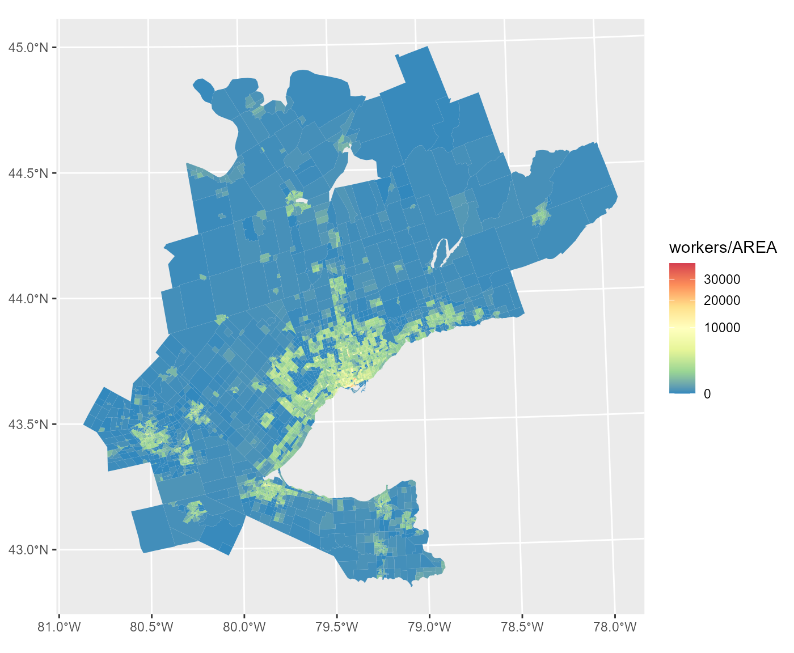
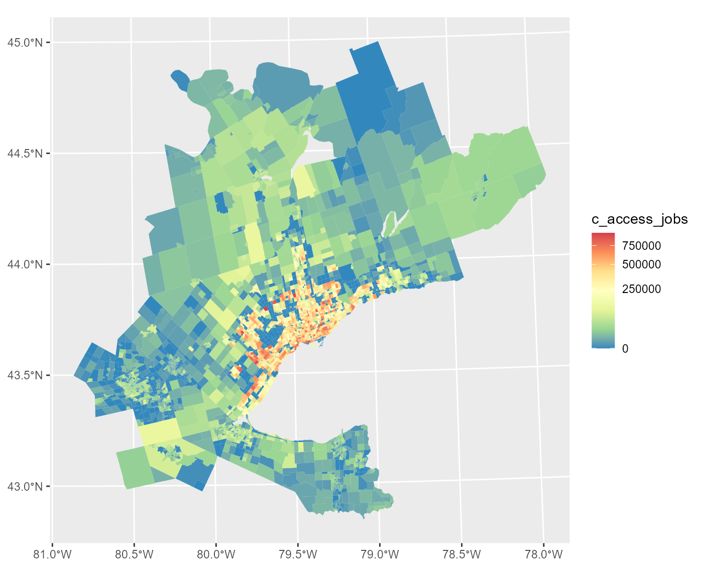
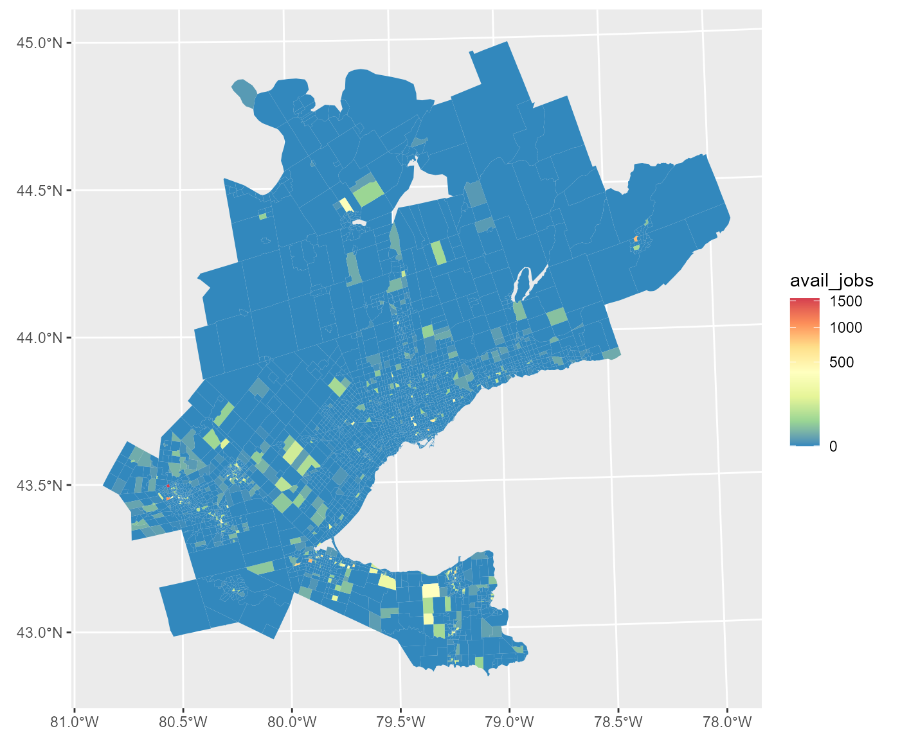
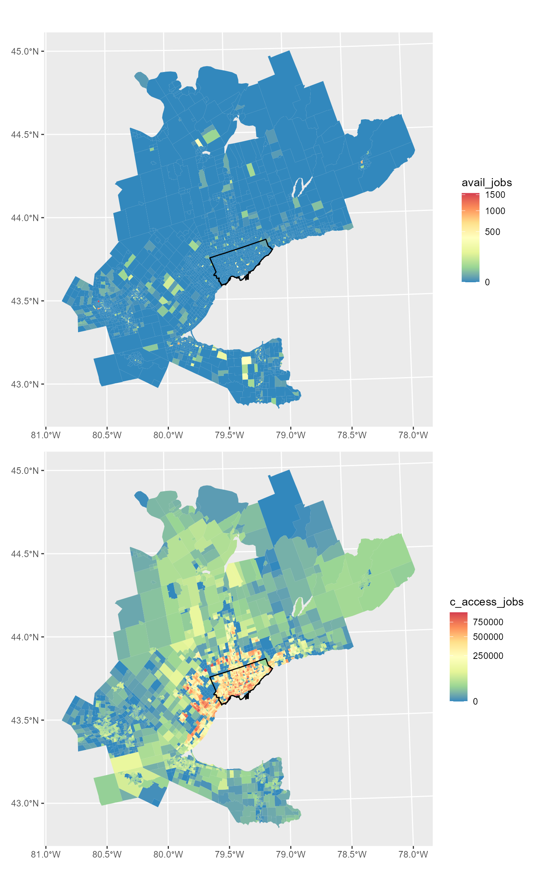
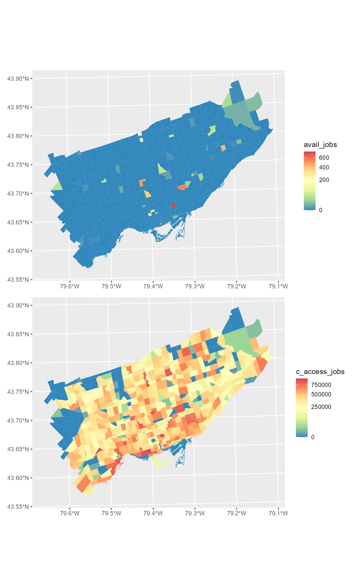
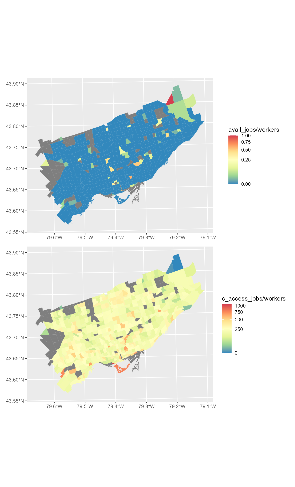

Empirical-Example.RmdIn this vignette we calculate both the conventional accessibility and the proposed spatial availability accessibility measures using the 2016 Transportation Tomorrow Survey (TTS) data for the Greater Golden Horseshoe Area (GTHA) in Ontario, Canada. We then explore these measures within the City of Toronto and compare the two calculated accessibility measures.
All data used is contained with the AccessPack data-package and the spatial availability function (sp_avail) is described in detail in the previous vignette.
Load packages needed for the example:
library(AccessPack)
library(dplyr)
library(ggplot2)
library(kableExtra)
library(patchwork)
library(sf)The ‘gtha_taz’ is a spatial object which contains the number of workers, jobs, and area (km^2) for each traffic analysis zone (TAZ), see the workers per area ploted below:
plot_GTHA <- ggplot() +
geom_sf(data = AccessPack::gtha_taz,
aes(fill= workers/AREA), color = NA) +
scale_fill_distiller(palette = "Spectral", trans="sqrt")
plot_GTHA
The od_ft_tt contains the trips made by workers to jobs (an Orgin-Destination matrix). Each row contains the origin ID for a TAZ, the destination ID for a TAZ, the number of people who complete this trip, and the travel time, by car, as calculated using r5r package for a departure of 7:00am (EST5EDT) on October 20th 2021 (a date selected at random). See “-raw” folder for data preparation .Rmd
Below is a summary of ‘od_ft_tt’ object:
summary(AccessPack::od_ft_tt)
#> Origin Destination Persons travel_time
#> Length:103076 Length:103076 Min. : 1.00 Min. : 0.0
#> Class :character Class :character 1st Qu.: 14.00 1st Qu.: 12.0
#> Mode :character Mode :character Median : 22.00 Median : 20.0
#> Mean : 33.44 Mean : 22.6
#> 3rd Qu.: 38.00 3rd Qu.: 30.0
#> Max. :1129.00 Max. :179.0Using the TTS-16 dataset describe in the previous section; let’s calculate conventional accessibility.
First, we must pick an impedence function. Let’s assume an impedance function of a binary 45 mins or less; meaning any job which can be reach in more than 45 min is not considered in evaluating the job accessibility for each origin.
#add the number of jobs and workers to the od_ft_tt matrix
od_ft <- AccessPack::od_ft_tt %>% merge(gtha_taz %>% select(GTA06, workers) %>% st_drop_geometry(),
by.x = "Origin", by.y="GTA06", all.x = T)
od_ft <- od_ft %>% merge(gtha_taz %>% select(GTA06, jobs) %>% st_drop_geometry(),
by.x = "Destination", by.y="GTA06", all.x = T)
#filter in only trips which are 45 mins or less, and summarize the sums of all jobs within each destination
c_accessibility <- od_ft %>% filter(travel_time <= 45) %>% group_by(Origin) %>% summarise(c_access_jobs = sum(jobs, na.rm = T))Now merge accessibly calculation to the gtha_taz and assign all NULL c_access_jobs value to “0”:
gtha_taz_acc <- AccessPack::gtha_taz %>% merge(c_accessibility, by.x=c("GTA06"), by.y=c("Origin"), all.x=T)
gtha_taz_acc <- gtha_taz_acc %>% mutate(c_access_jobs = ifelse(is.na(c_access_jobs), 0, c_access_jobs))Plot conventional accessibility (accessible jobs in each TAZ):
plot_c_access <- ggplot() +
geom_sf(data = gtha_taz_acc,
aes(fill= c_access_jobs), color = NA) +
scale_fill_distiller(palette = "Spectral", trans="sqrt")
plot_c_access
Using the TTS-16 dataset describe in the first section; let’s calculate spatial availability.
First, pick some beta value and calculate some impedance function for our travel cost variable. Here we assume a beta value of 0.0015, an exponential decay impedance function, and travel time (in minutes) to be our travel cost variable:
Now calculate spatial availability:
od_ft <- od_ft %>%
mutate(catch = 1) %>%
mutate(V_ij = sp_avail(.,
o_id = Origin,
d_id = Destination,
pop = workers,
opp = jobs,
r = catch,
f = f))Verify that the sum of all jobs allocated is consistent with the total number of jobs (this property is this measures novel contribution):
sum(od_ft$V_ij, na.rm=T)
#> [1] 3081900
sum_jobs <- od_ft %>% group_by(Destination) %>% summarise(jobs = mean(jobs))
sum(sum_jobs$jobs, na.rm = T)
#> [1] 3081900The total number of jobs is preserved.
Aggregate available jobs (‘V_ij’) by origin:
availability <- od_ft %>%
group_by(Origin) %>%
summarize(avail_jobs = sum(V_ij))
availability
#> # A tibble: 2,973 x 2
#> Origin avail_jobs
#> <chr> <dbl>
#> 1 1 NA
#> 2 100 NA
#> 3 1001 NA
#> 4 1002 NA
#> 5 1003 NA
#> 6 1007 0.245
#> 7 1008 NA
#> 8 101 NA
#> 9 1011 0.834
#> 10 1012 1.06
#> # ... with 2,963 more rowsNow merge accessibly calculation to the gtha_taz and assign all NULL c_access_jobs value to “0”:
gtha_taz_acc <- gtha_taz_acc %>% merge(availability, by.x=c("GTA06"), by.y=c("Origin"), all.x=T)
gtha_taz_acc <- gtha_taz_acc %>% mutate(avail_jobs = ifelse(is.na(avail_jobs), 0, avail_jobs))Plot spatial availability (accessible available jobs in each TAZ):
plot_avail <- ggplot() +
geom_sf(data = gtha_taz_acc,
aes(fill= avail_jobs), color = NA) +
scale_fill_distiller(palette = "Spectral", trans="sqrt")
plot_avail
Plot origin conventional accessibility vs. availability (with the City of Toronto Boundary):
plot_avail <- ggplot() +
geom_sf(data = gtha_taz_acc,
aes(fill= avail_jobs), color = NA) +
scale_fill_distiller(palette = "Spectral", trans="sqrt") +
geom_sf(data = AccessPack::toronto_muni_bound, colour="black", fill=NA)
plot_c_access <- ggplot() +
geom_sf(data = gtha_taz_acc,
aes(fill= c_access_jobs), color = NA) +
scale_fill_distiller(palette = "Spectral", trans="sqrt") +
geom_sf(data = AccessPack::toronto_muni_bound, colour="black", fill=NA)
plot_avail / plot_c_access
Let’s take a closer look at the measures just within the City of Toronto boundary.
#transform CRS
toronto_muni_bound <- st_transform(AccessPack::toronto_muni_bound, crs=32617)
#select only zones within Toronto Municipality
TO_taz_acc <- gtha_taz_acc %>%
filter(st_intersects(., toronto_muni_bound, sparse = FALSE)[,1])Plot origin conventional accessibility vs. availability for Toronto
plot_avail <- ggplot() +
geom_sf(data = TO_taz_acc,
aes(fill= avail_jobs), color = NA) +
scale_fill_distiller(palette = "Spectral", trans = "sqrt")
plot_c_access <- ggplot() +
geom_sf(data = TO_taz_acc,
aes(fill= c_access_jobs), color = NA) +
scale_fill_distiller(palette = "Spectral", trans = "sqrt")
plot_avail / plot_c_access
Let’s try normalizing number of workers from origin (we don’t have population of TAZ in this dataset):
plot_avail <- ggplot() +
geom_sf(data = TO_taz_acc,
aes(fill= avail_jobs / workers), color = NA) +
scale_fill_distiller(palette = "Spectral", trans = "sqrt")
plot_c_access <- ggplot() +
geom_sf(data = TO_taz_acc,
aes(fill= c_access_jobs/ workers), color = NA) +
scale_fill_distiller(palette = "Spectral", trans = "sqrt")
plot_avail / plot_c_access